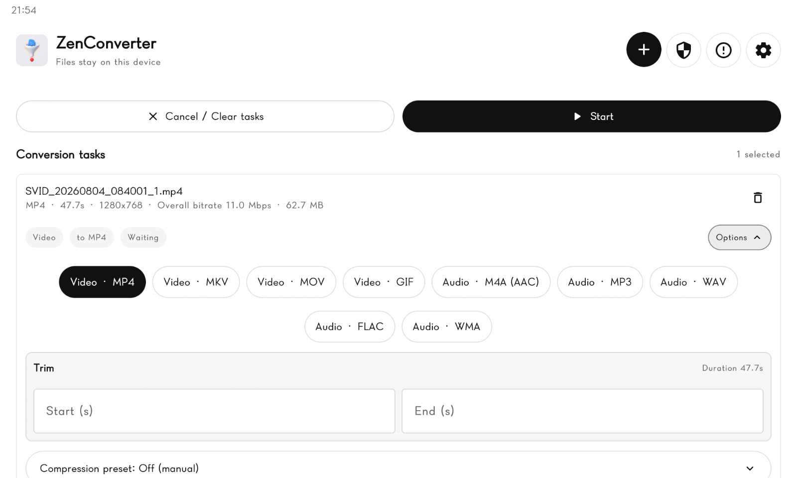
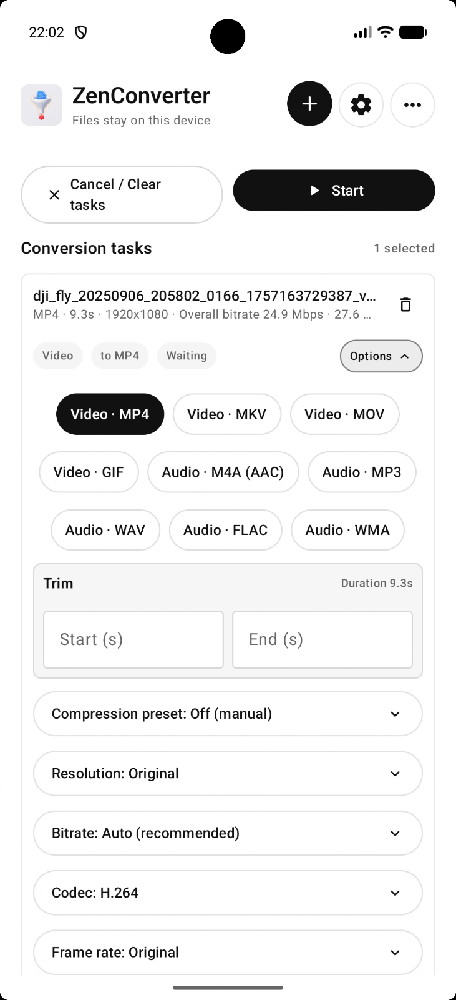

为什么 ZenConverter 宁可说"不行"，也不做"万能转换器"
从 support-matrix 公开边界、FFmpeg 真机验证到动态内存预算，拆解这款 Android 转换工具背后的诚实设计哲学，以及这种选择在实际场景中的代价与回报。
你有没有遇到过这种情况：下载一个号称"支持 1000+ 格式"的转换器，兴冲冲拖进去一个 MKV，结果要么静默失败，要么转出来一个音画不同步的 MP4？我自己踩过不止一次坑，所以当我看到zenconverter官网上的支持矩阵里明明白白写着 Any → Any = Planned, 引擎 None, 备注：不要暗示通用支持 时，第一反应是——这货是真敢说。
但这不是谦虚。往深挖一层你会发现，这种"不装万能"的姿态不是营销话术，而是贯穿整个应用架构的设计原则。从 Contact Sheet 抽帧的三重安全上限，到 GIF 拆帧放弃 Android Bitmap 直接走 FFmpeg 管线，再到 arm64-only 的原生库打包，每一个技术决策背后都站着同一个问题：如果我宣称支持这个格式，我能不能对结果负责？
真机验证比"格式数量"贵得多
很多人可能没意识到，"FFmpeg 有这个 codec"和"用户拿到手上能稳定用"之间，隔了一条很长的沟。ZenConverter 的开发者在设计文档里列过这条沟的尺寸：每加一个新的转换路线，至少要在 arm64 真机上跑通真实文件、验证几 GB 级视频不 OOM、检查输出容器里的封面和 ID3 元数据是否保留、还要把 Opus 只支持 48kHz 倍数采样率这种边界条件写进zenconverter文档里。

这些工作不是一次就完的。Contact Sheet 那个 100 帧上限、8192px 单维度限制、32MP/GiB RAM 动态预算的三重安全闸，就是在真机上跑了一堆 4K 长视频之后才定下来的。开发日志里能看到类似 fix(contact-sheet): resolve rotation distortion and 4K frame extraction failures 这样的提交——这不是改个参数的事，是真实用户反馈驱动的反复打磨。
反过来想，那些声称"万能"的转换器怎么做到的？要么是偷工减料不做真机验证，把云端转存包装成本地转换，要么就是把大量格式塞进一个"能跑就行"的管线里，遇到边界条件直接崩。ZenConverter 选了另一条路：宁可少覆盖几个格式，也要让每条路线都有真机测试的痕迹。
为什么 GIF 拆帧不走 Android Bitmap
GIF 拆帧这个功能，刚好能把这种"诚实哲学"具象化。你可能会觉得，GIF 拆帧嘛，Android Bitmap 解码一下不就完了？但 ZenConverter 的开发者直接选了 FFmpeg 路线，放弃了看起来更轻量的 Bitmap 方案。原因很简单：Android 的 BitmapFactory 实现大多只解码 GIF 的第一帧，逐帧解码动画必须走 FFmpeg 的 GIF demuxer。
这个决策带来了一个连锁反应：GIF 拆帧模式下 AI 超分功能被强制隐藏了。为什么？因为超分管线在拆帧模式下跑不通（每帧独立处理会导致 tile 计算混乱），与其让用户以为"拆帧 + 超分"是可用的然后静默跳过，不如直接在 UI 上藏掉。这就是 ZenConverter 的逻辑——能用的功能就露出来让你用，不能用的功能绝对不假装能用。
这种态度甚至延伸到了格式保留策略上。GIF 拆帧的输出会明确告诉你：帧延迟、循环次数、调色板、元数据全部不保留——拆帧就是拆成独立图片，没有"时序"这个概念。你不会看到一个模糊的"部分保留"或者干脆不告诉你，等你发现拆出来的图片没法合回去 GIF 时再后悔。
动态内存预算：不碰运气，也不浪费
再看一个细节。ZenConverter 所有大图输出都有基于设备 RAM 的安全机制——Contact Sheet 的 32MP/GiB RAM 上限、AI 超分的 tile 尺寸自动调整、倒放功能的 60 秒内存保守限制。这些不是拍脑袋定的数字，是动态计算出来的。
把缓存讲成"桌边常备的便签"——内存预算就像你能贴多少张便签在桌面上，桌面越大（RAM 越大），能贴的便签越多（能处理的像素越多）。但 ZenConverter 不会让你把桌面贴满以至于掉下来——它留了安全余量，最低 64MP，最高 512MP，确保你在一台 8GB RAM 的手机上抽完 100 帧 4K 视频之后还能正常切换 App。
这种"保守但不浪费"的策略，和 arm64-only 的选择一脉相承。现代 Android 设备几乎都是 64 位的，打包多架构原生库会显著增大 APK 体积，而 NCNN Vulkan GPU 加速只在 arm64 路径上做了适配——那为什么还要支持 32 位 ARM ？ZenConverter 直接放弃了这个目标用户群，把精力集中在一条确定能跑通、能跑得好的技术路线上。想试试的话直接去zenconverter下载拿就行。

诚实的代价与回报
这种设计哲学当然有代价。32 位 ARM 设备装不上这个应用，HEIC 解码依赖系统所以旧设备可能直接失败，Office 转 PDF 不承诺版式完全保真，源文件上限 64 MiB，AI 超分依赖 Vulkan 所以部分芯片不兼容。这些边界条件每一个都会挡掉一部分潜在用户。
但回报是什么？你拿到的是一个能力边界清楚的工具。不会因为某个"万能"功能在这个格式上翻车而浪费时间，知道哪些场景它能稳、哪些要谨慎。真出问题的时候，support-matrix 和 commit 历史是排查线索，而不是让你在模糊的"支持/不支持"之间猜。
我觉得最有意思的是版本日志的风格。没有"重磅发布"、"革命性更新"、"完美支持"这类词，每个 commit 标题都是简洁的、不带营销修饰的改动说明：fix(contact-sheet): resolve rotation distortion and 4K frame extraction failures、feat(webm): add WebM output with VP9/VP8 encoding and Opus audio、refactor(ui): decouple OLED dark mode from theme mode。它告诉你实际上改了什么、修了什么、加了什么，而不是让你相信这次更新一定能解决你所有的问题。
谁适合用这种"诚实"的工具
如果你是专业用户、批量处理场景、对结果有可预期性要求的人——比如需要把一堆讲座视频转成统一格式做归档，或者想从长视频里抽帧做内容预览——ZenConverter 这种"不装万能"的风格反而是一种踏实。你知道它能做什么、不能做什么，就可以据此规划工作流，而不是反复试错。
反过来，如果你想要一个"拖进去就自动搞定一切"的工具，可能会觉得 ZenConverter 的 support-matrix 写得太啰嗦了。但我觉得，在转换器这个领域，诚实本身就是一种稀缺品——尤其是当你已经被那些"万能"广告骗过好几次之后。如果你想深入挖它的源码实现，GitHub、Gitee、GitCode 三个仓库都有完整的项目镜像，国内访问不会卡。